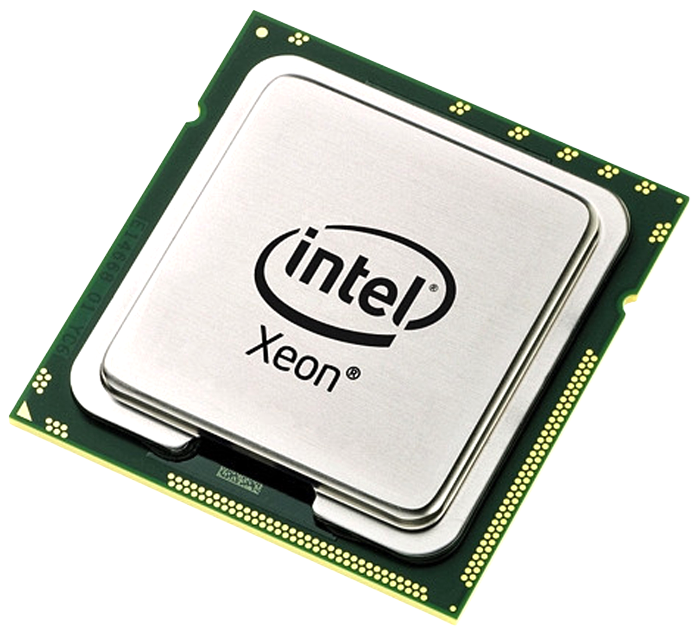

Central Processing Unit (CPU)

Central Processing Unit (CPU)
The central processing unit is a computer chip responsible for basic arithmetic, logical or mathematical processes needed by the programs on the PC, they can work out different calculations in the billions per second, displayed in GHz, the number before in determining how many calculations it can do per second, for example a CPU with a clock speed of 2.4 GHz could work out 2,400,000,000 calculations per second, however, now that technology is evolving, modern CPU’s can work out more calculations without the higher clock speed as they prioritise some equations over others limiting the need for as many to be needed in the first place.